Brand teams and media mix models disagree about time. Brand teams say a campaign builds the brand for years. A media mix model (MMM) usually says its effect is gone within a couple of months.
Both can be right. The MMM measures the short-term lift in sales that follows a burst of spend. What it struggles to see is the slow climb: more people who know the brand, more who would consider it, and a higher level of sales that stays.
Binet and Field made this case with the IPA databank in The Long and the Short of It (2013). Their advice to put around 60% of the budget into brand building rests on effects that build over years. Measuring those effects for one brand from its own data is harder.
Peter Cain has shown how. In a 2022 paper in the International Journal of Research in Marketing he ties brand metrics to base sales with cointegration. A lasting lift in awareness or consideration then carries through to sales for good. This article works through his approach step by step, with a Bayesian version of the model in an open-source Python package.
Here is the shape of the answer on a simulated brand. Run a 13-week brand campaign and add up what it earns. Over five years it earns about six times what it earns in the first year, because the lift in awareness and consideration holds sales up long after the spend stops. Only about a sixth of the return arrives in the window an MMM looks at.
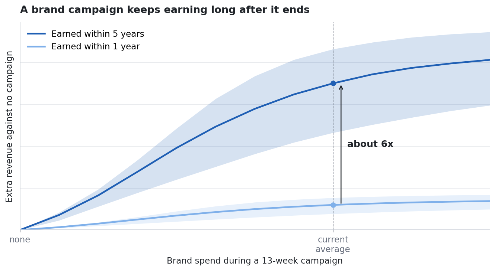
Every number in the article comes from simulated data with a known answer, so each step can be checked against the truth. The same code runs on real data, and the last section covers what changes when you use your own.
The first half builds the model. It covers why trending series break ordinary regression, how cointegration ties them together and what each piece of the model means. The second half adds what real brand data needs: carryover, diminishing returns, same-week links and a clean base sales series.
§1 · The problem
The problem with adstock
An MMM explains weekly sales with spend, price, seasonality and a baseline. Spend enters through adstock: each week keeps a share of the previous week's effect. A burst of TV then fades out over a few weeks.
That suits the question an MMM is built for. How did this quarter's spend move this quarter's sales? It does not suit brand, whose effect builds over years.
The usual fix is a second, longer adstock for brand. The short decay captures activation and the long one is meant to capture brand building. Peter Cain calls this the adstock illusion (Cain 2025).
His argument is about time series. Sales trend over years, and a slowly decaying spend series looks like a trend too. Regress one on the other and they appear related whether or not brand drives sales. The long adstock ends up fitting the drift in the baseline, and it says nothing about how brand building works.
Cain's alternative keeps the two apart. Short-term activation is stationary variation around the base. Long-term brand building is the base itself: the slow level of sales that moves with awareness and consideration.
So the long-term model needs three things an MMM leaves out. It needs the brand metrics as well as sales. It needs to treat their trends as information rather than something to remove. And it needs a lasting change in one series to carry through to the others. A vector error correction model does all three, and the next sections build it one piece at a time.
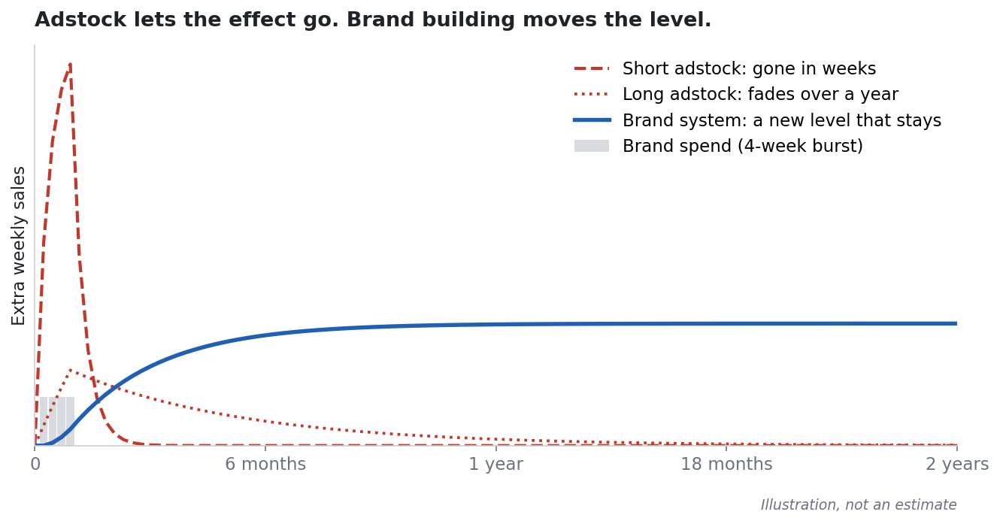
§2 · The system
Brand as a system
A brand works through a funnel. Marketing makes people aware of the brand. Some of those people come to consider it, and some of those buy. Each step feeds the next, so a lasting rise at the top of the funnel should show up lower down.
Brand trackers measure the middle of the funnel. Awareness is the share of people who know the brand. Consideration is the share who would think about buying it. Together with sales they form the system we model. Sales here means base sales: sales without the short-term lift from performance media. §12 covers how to build that series.
Around the system sit the drivers. Brand spend, PR and sponsorship push on awareness. Interest rates and consumer confidence push on consideration from outside. The model treats all five as set outside the brand: they move the system but do not respond to it. §6 shows how to check that budgets are not following performance.
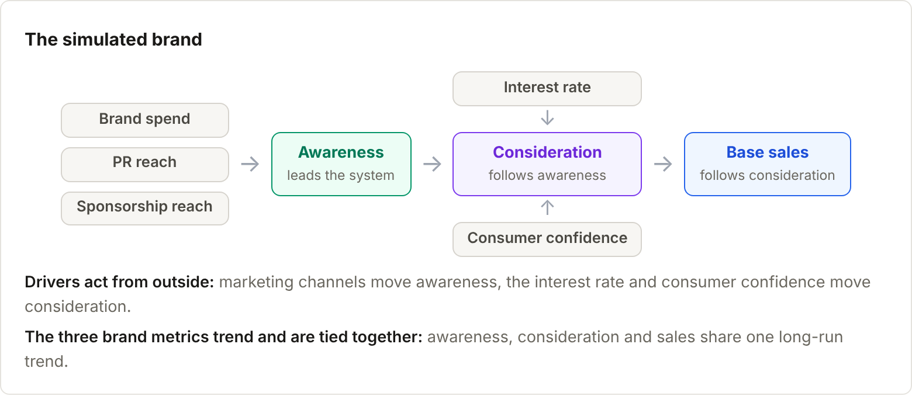
To check every step we simulate five years of weekly data with known parameters. The chain is built in: channels move awareness, awareness moves consideration and consideration moves sales. Sales double over the five years. Awareness rises from 20% to 36% and consideration from 10% to 17%.
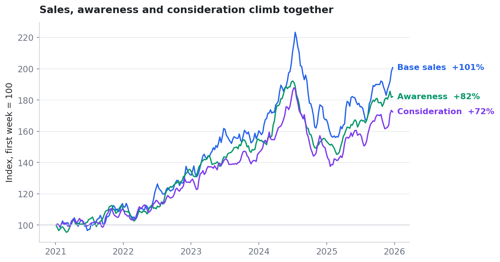
The three brand series climb together, with week-to-week noise around the climb. That shared climb is what the rest of the article is about. Ordinary regression handles it badly, as the next section shows.
§3 · Trends
Trends, and why regression fails
Most analysts start with regression. Regression assumes each series is stationary: it moves around a stable average with a stable spread, so a shock fades and the series comes back. The brand series are not. Each week starts from where the last one ended and nothing pulls the series back to a fixed level. Economists call this a unit root, and a series with one is non-stationary.
Regress one such series on another and you get a spurious regression. Take two random walks built independently of each other. Regressing one on the other gives a slope with a t-statistic of 15.9 and an R² of 0.50. The two series have nothing to do with each other: they just drifted over the same five years.
This is not bad luck. Across 1,000 pairs of unrelated random walks of five years each, 84% gave a slope significant at the 5% level.
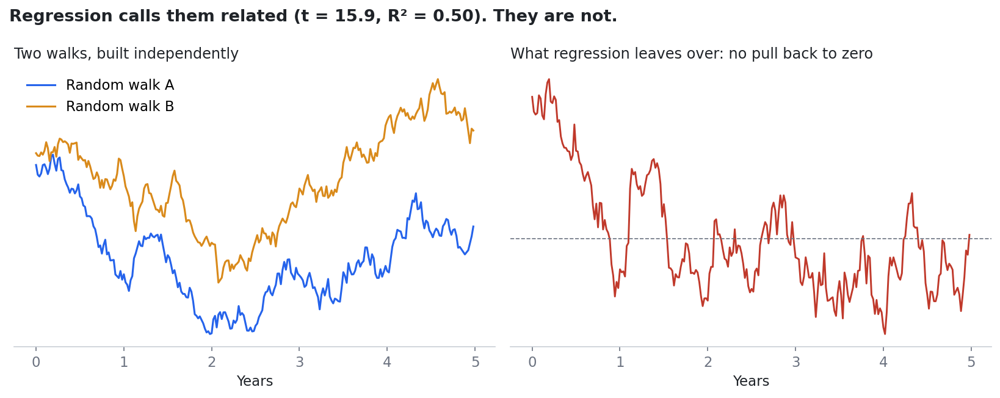
The usual fix is to difference the data: model the weekly change instead of the level. Weekly changes have a stable average, so regression on them is safe. But differencing throws away the levels, and the levels hold the long-run story. A campaign that lifts awareness for good shows up only in the level.
A series that becomes stationary once differenced is integrated of order one, written I(1). A stationary series is I(0). These labels turn up in the output of every time series package.
So the first step is to sort the series. The Augmented Dickey-Fuller (ADF) test starts from the assumption of a unit root and asks whether the data can reject it. A small p-value says the series is stationary. For the three brand series it cannot reject a unit root (p-values between 0.73 and 0.80). Their weekly changes are clearly stationary, so all three are I(1).
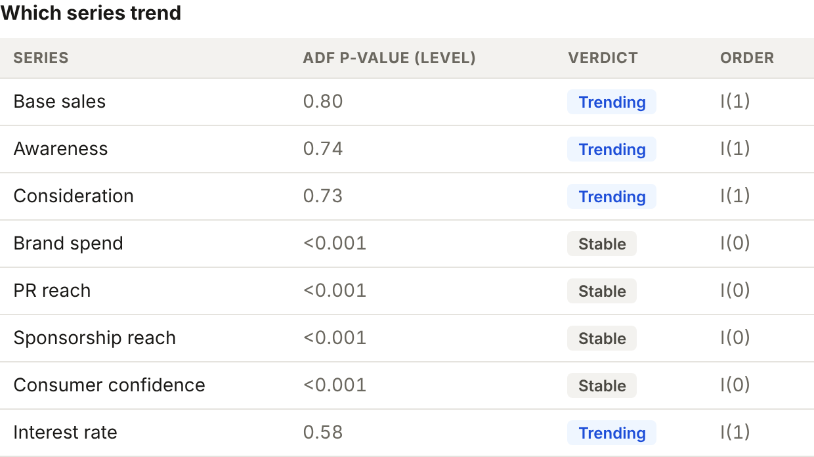
The drivers mostly behave differently. Brand spend, PR, sponsorship and consumer confidence move around a stable level. The interest rate trends like the brand series. §5 covers what that means for how each one enters the model.
Trending series need a model that keeps the levels without being fooled by them. That model rests on cointegration.
§4 · Cointegration
Cointegration: the dog on a lead
Some trending series are tied together. Each one wanders, but a weighted difference between them does not: it keeps returning to a stable level. Series like these are cointegrated. The weighted difference is the cointegrating relationship, and its stable level is the long-run equilibrium.
Think of a dog on a long lead walking with its owner. Each path wanders and neither is predictable from one minute to the next. The distance between them is bounded. When the lead goes taut the dog is pulled back.
In our brand one lead runs between consideration and sales. In logs, sales track about 1.27 times consideration. Read 1.27 as an elasticity: a 1% rise in consideration goes with a 1.27% rise in sales in the long run. The gap between the two stays within about 8% of its average for all five years.
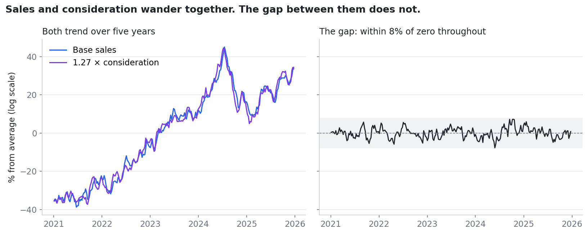
Cointegration also settles the worry from §3. The Engle-Granger test checks whether the gap left by a regression is stationary. For the two random walks it is not (p = 0.13). For log sales on log consideration it is (p < 0.001). The R² of that regression is 0.99 and this time it means something.
A second lead runs between awareness and consideration. Two leads tie three series, so one shared trend is left. That trend belongs to awareness, and it is why a lasting lift in awareness carries all the way through to sales.
The number of leads is the cointegration rank. Johansen's trace test finds it by asking in turn whether there are none, at most one, at most two. It stops at the first answer it cannot reject. On our brand it stops at two, the true number.
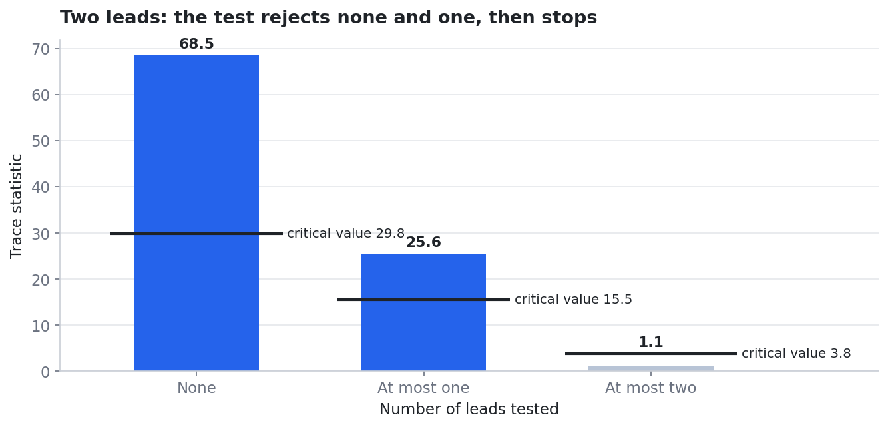
The test is a guide rather than a ruling. Across 200 simulated data sets like ours it found two in 81% of them with five years of weekly data. With three years that fell to 45%, and most misses found one too few. A business view of how the funnel should work is a useful check: three series sharing one trend should have two leads.
§5 · The VECM
The VECM, one piece at a time
A vector error correction model (VECM) describes the weekly change in each series. It splits that change into a few parts. Each part has a plain reading for the brand.
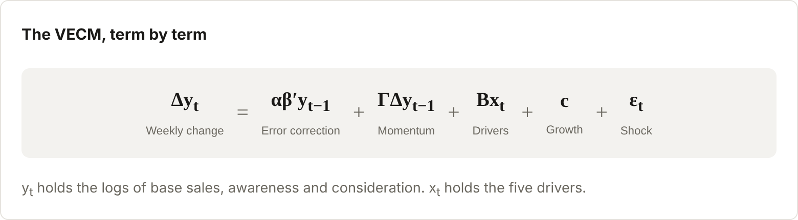
The left side is this week's change in the log of sales, awareness and consideration. Changes in logs read as percentage changes.
y holds three series, so the VECM is really three equations fitted together: one for each series. The bold letters stand for all three at once. Written out with the two leads it looks like this.
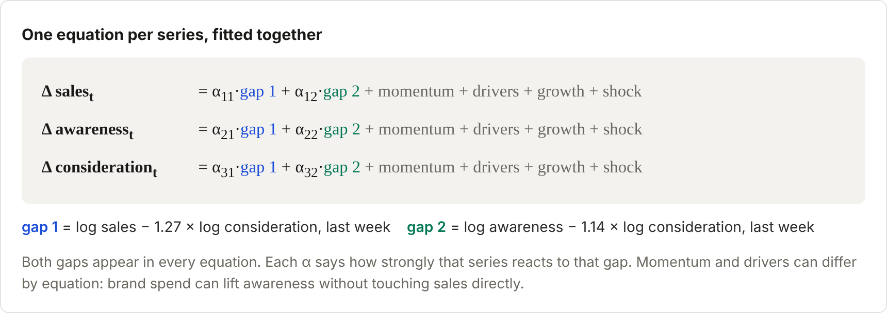
The first part is the error correction. β′yt−1 measures how far each lead was stretched last week: how far sales sat from 1.27 times consideration, for example. α turns that stretch into this week's move. This is the part that keeps the series together, and §6 looks at it closely.
The second part is momentum. Γ carries last week's changes into this week. If awareness jumped last week, Γ says how much of that jump shows up in consideration now. These effects fade within weeks.
The third part is the drivers. B holds the effect of this week's brand spend, PR and other drivers on each series. Drivers that move around a stable level enter as they are. The interest rate trends, so it enters as its weekly change: a trending driver cannot explain growth that keeps returning to its average.
The fourth part is a constant. It lets each series grow at a steady rate, which a growing brand needs.
What is left is the shock: the part of this week that nothing in the model predicts. Shocks to the three series are correlated because news and competitors hit them together. §7 comes back to why that matters.
For our brand the choices are one week of momentum, two leads and a constant. The lag comes from the Hannan-Quinn criterion, which picked the true order in at least 94% of simulated data sets. The rank comes from the test in §4.
We fit the model with Bayesian sampling. §11 explains why. For now it means every estimate comes with an 89% interval.
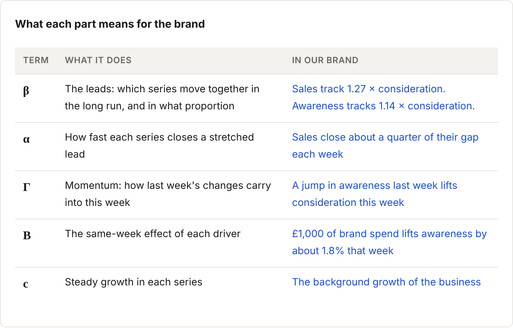
The fitted leads match the truth closely. Sales track 1.27 times consideration (truth 1.25) and awareness tracks 1.14 times consideration (truth 1.125). Both truths sit inside their 89% intervals.
§6 · Leaders
Who leads and who follows
α says who closes a stretched lead and how fast. A series with a large α on a gap is a follower: it moves to close that gap. A series with α near zero on every gap ignores the gaps. It leads, and the others follow it.
In our brand sales close about 23% of the gap to consideration each week, so half of any gap is gone in under three weeks. Consideration closes about 20% of its gap to awareness each week, with a half-life of about three weeks. Awareness barely reacts to either gap.
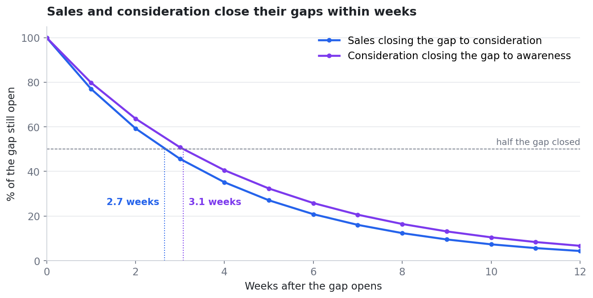
A series that does not respond to the gaps is weakly exogenous. Awareness is the one here, which is why the shared trend from §4 belongs to it. A lasting lift in awareness is never pulled back. Consideration and then sales move up to meet it.
The fitted model is not perfect on this point. The truth has awareness ignoring both gaps. The fit gives it a small α of 0.05 on the second gap against 0.20 and 0.23 for the two followers, and its interval just misses zero. Across many simulated data sets the model calls awareness weakly exogenous about nine times in ten.
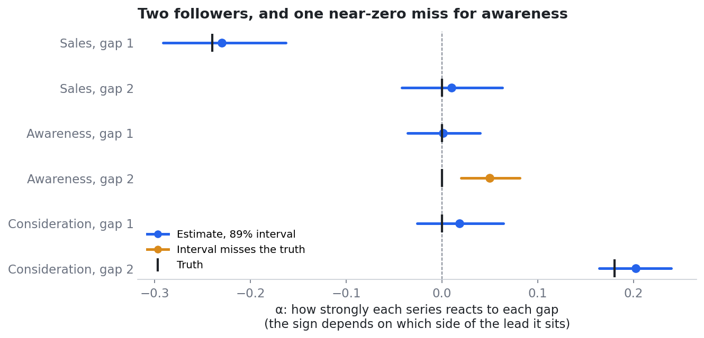
α is one way to ask what drives what. Granger causality is the other. X Granger-causes Y if past values of X help predict Y beyond Y's own past. The name oversells it: it is about prediction, not cause.
We use it twice. Before fitting, a Granger test on the levels checks which way the data run. Its most useful question is whether past brand metrics predict spend. If they do, budgets are following performance and the driver effects will be biased. In our brand none do.
After fitting, the same question is asked of the posterior. Short-run links come from Γ and long-run links from the leads. For each one the model reports an evidence score between 0 and 1: how clearly the posterior rules out zero. We count 0.95 or more as a link.
The scores recover the funnel. Awareness helps predict consideration and consideration helps predict sales, in the short run and the long run, with evidence of 1.00 each. Every reverse link scores 0.88 or less. The score says whether a link exists, not how big it is. Size comes in §8.
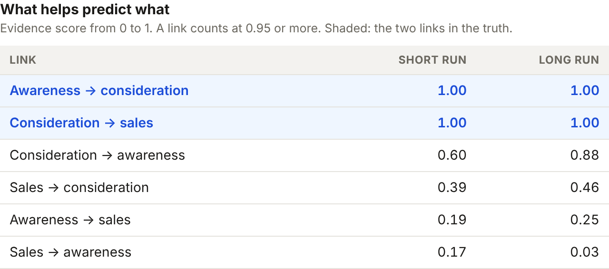
§7 · Shocks
Following a shock through the system
An impulse response traces what one surprise does to every series over the weeks that follow. For a brand the key one is a surprise rise in awareness, say after a campaign lands or a story breaks. Where are sales a year later?
In our brand sales are about 1% higher a year later, and they stay there. Awareness leads and is never pulled back, so the leads pull consideration and then sales up to meet it. An adstock curve would be back at zero within weeks.
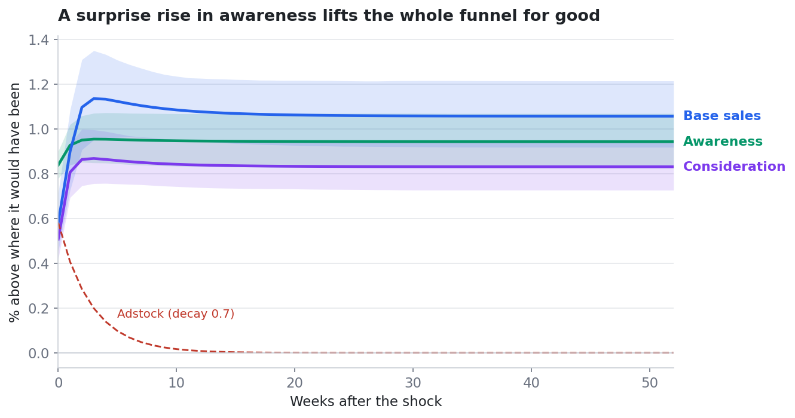
There is a catch. Shocks rarely arrive alone: the three series' shocks are correlated, because news and competitors hit them in the same week. To trace an awareness shock, the model has to decide how much of the same-week movement in sales belongs to awareness and how much to sales' own shock.
The classic answer is a Cholesky ordering. You put the series in an order, and each can move the ones after it in the same week but not the ones before. The answer then depends on the order you choose.
Generalised impulse responses (GIRFs, Pesaran and Shin 1998) avoid choosing an order. They let a shock bring along whatever usually moves with it. That turns out to equal a Cholesky response with the shocked series placed first, and GIRFs for different shocks rest on different orders that cannot all hold at once (Kim 2009).
So a GIRF is safe to read for the series that genuinely comes first. Cain (2022) estimates the same-week links in a real brand funnel and finds awareness comes first: it moves consideration and sales within the week and nothing moves it. For awareness shocks the GIRF is then the right answer. In our brand putting sales first instead changes the first few weeks but not where sales end up.
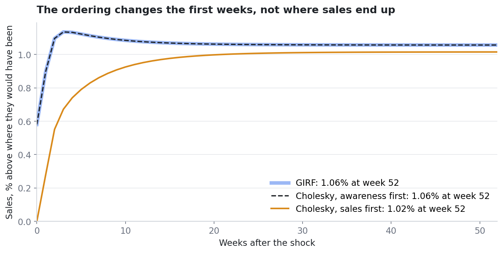
§8 · Spend to £
From spend to £
Shocks help us understand the system. A budget decision needs something else: what one more pound in a channel returns. The drivers part of the model answers it.
Put one more unit of brand spend into a single week and push it through the fitted system. It lifts awareness that week. The leads then carry the lift through to consideration and sales, which settle at a slightly higher level and stay there.
Add up the extra sales each week and value them at recent weekly sales. That is the return per £. Because sales stay higher the total keeps growing with the window: one year, three years or five.
In our brand one more £1 of brand spend returns about £2.20 within a year and about £12.60 within five. Less than a fifth arrives in the first year. That year-1 figure is the one closest to what an MMM measures for the same channel.
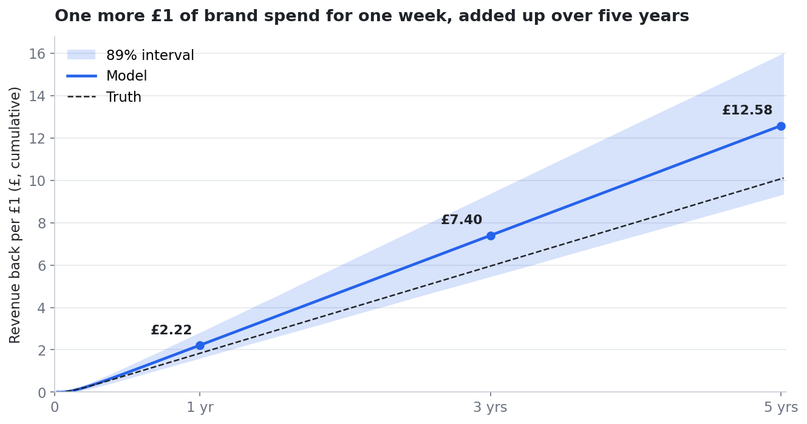
Two things set the size of the pounds. The model treats a lasting lift in awareness as permanent. Each week then adds the same extra sales for as long as you count. The simulated brand also spends heavily against its sales with large effects, chosen so the model has a clear signal to recover. Read the pounds as an illustration of the method and the year-1 share as the lesson.
On this data set the model runs about a fifth above the truth for every channel, because they share the path from awareness to sales. §11 shows it holds the truth on average across many data sets.
The same calculation works for PR and sponsorship per person reached. §9 and §10 add carryover, diminishing returns and same-week links to the model. The pattern holds: most of the return arrives after the first year.
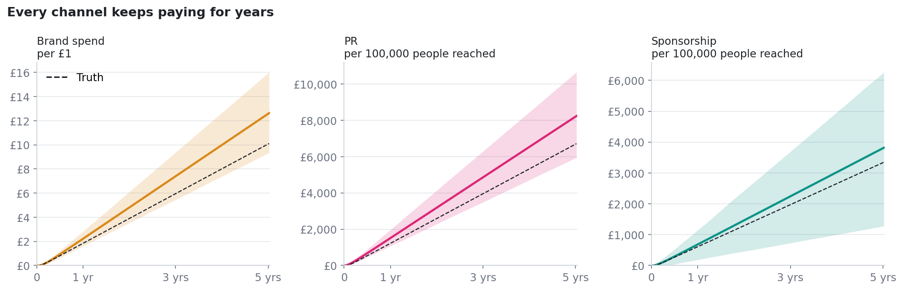
§9 · Carryover and saturation
Carryover and diminishing returns
Most readers will know adstock and saturation from MMM. What matters here is where they sit in the VECM and how much they change the answer.
Both act on the drivers before spend reaches the brand metrics. Each channel's spend first goes through a geometric adstock with its own decay. The result then goes through a logistic saturation curve with its own steepness. Only then does it move awareness. The leads, the momentum and the long run are untouched.
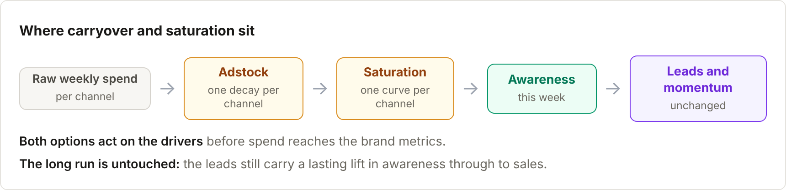
Two details matter in practice. Saturated channels need raw spend rather than spend relative to its average, because the curve needs a real zero. The model estimates each channel's effect of one more unit at today's average spend. That is what the data pin down best, and the rest of the curve's shape is inferred from there.
The impact is large, as the table shows. Leaving out carryover misses about half of a channel's effect, and a straight line badly misjudges big budget moves. Near current spend the two barely differ.
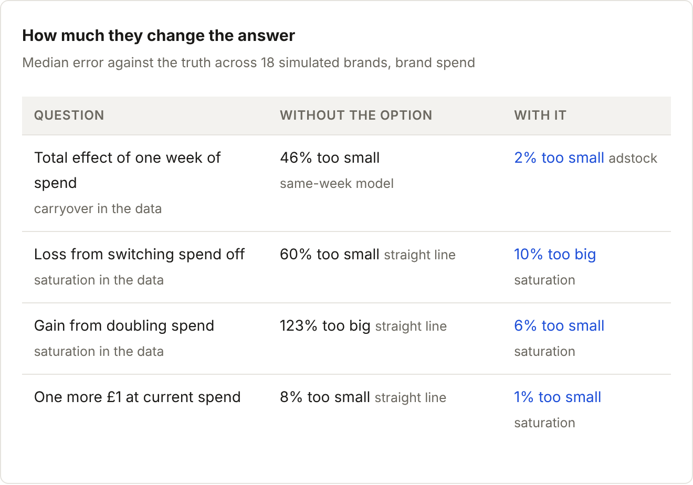
Neither is free. With no real saturation in the data the curve still bends a little. Any spend level the data never saw is a guess at the shape, so read it through its interval. The default priors in MMM tools pulled decays and curves low here, so the package uses flatter ones.
§10 · Same-week links
Same-week links
§7 left one question open: does awareness move consideration within the same week? The answer says how fast a campaign reaches the bottom of the funnel, and the plain model cannot give it. Momentum covers last week, and the shocks only say the two move together.
A regression of consideration growth on awareness growth says yes, even when the true link is zero. On simulated brands with no link it found about 0.3, because the shocks they share move both at once.
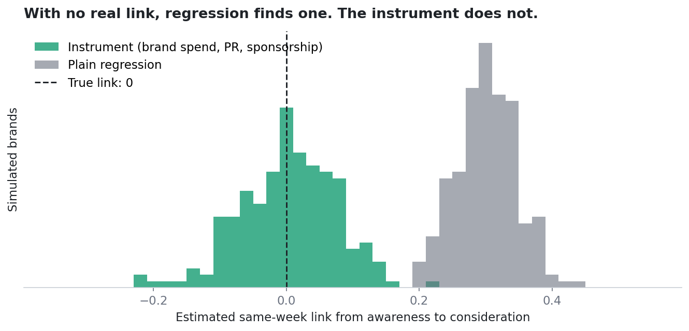
The fix, as in Cain (2022), is an instrument: a driver that moves awareness but reaches consideration only through it. Brand spend is the natural one. Its effect on consideration divided by its effect on awareness is the link. With that exclusion the estimate came back to zero when the truth was zero.
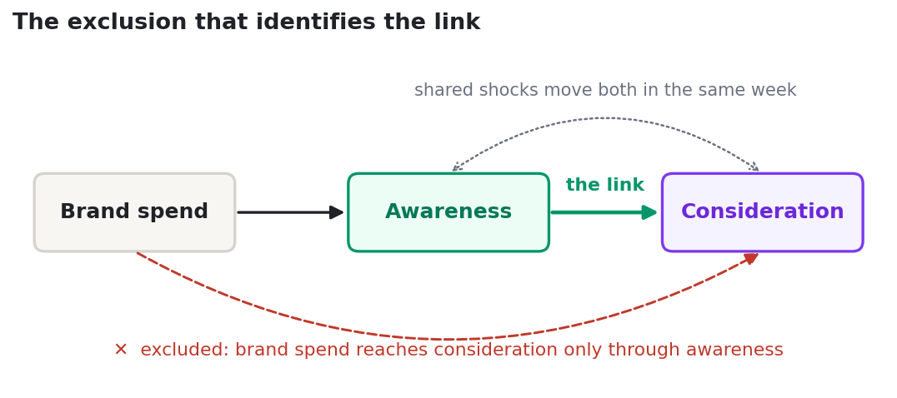
In the package you name the link and the drivers excluded from the effect's equation. The model estimates the link inside the fit with its own interval. A test before fitting checks that the instruments are strong and agree with each other.
Two things to know. A right exclusion halves the uncertainty on how much brand spend moves consideration. A wrong one biases it, and the test rarely notices: the exclusion is a business judgement, not something the data can settle. On monthly data the link also absorbs effects that take a week or two.
Leaving the link out is safe for the return per £, which uses the total effects either way. Add it when the question is how fast the funnel moves.
§11 · Why Bayesian
Why Bayesian
Everything so far could be fitted the classical way, and statsmodels has a VECM. On five years of weekly data the two give the same estimates: across 30 simulated brands they agreed to the second decimal place. So why sample?
The first reason is the numbers people actually ask for. A return per £ or a response curve is built from many parameters at once. The classical route needs a bootstrap for each one. Here every posterior draw gives its own return, curve and forecast, so the interval comes for free.
The second reason is honesty on short samples. Brand trackers often have only a few years of history. We cut our simulated brands to 60 periods and checked how often each method's 90% interval held the truth. The classical intervals for the leads held it only 62% of the time, and the bootstrap held the return per £ about 80% of the time. The Bayesian intervals stayed close to 90% throughout.
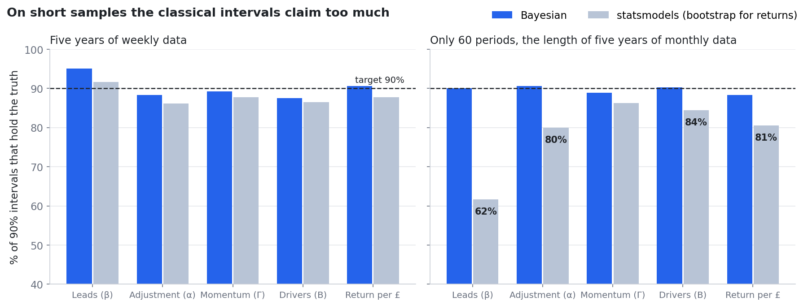
This is also the check §8 promised. On a single data set the model can sit above or below the truth, as it did there. Across many data sets its intervals hold the truth about as often as they claim to.
The cost is time and care. A fit takes tens of seconds rather than milliseconds, and the sampler needs checking: no divergences, and chains that agree. The package reports both after every fit.
§12 · Base sales
Base sales: where it most often goes wrong
The model needs a sales series without the short-term lift from performance media and promotions. Cain calls it base sales. Most teams take it from their MMM, and this is where things most often go wrong before the VECM sees any data.
Base sales should be actual sales minus the MMM's short-term contributions, and nothing else. The slow climb has to stay in, because that is what the VECM explains. So does the week-to-week noise.
The common mistake is to use the MMM's baseline instead: the smooth trend or time-varying intercept most MMM tools report. We tested both routes on simulated brands where the true base is known, plus a third: total sales straight into the VECM with the short-term drivers alongside.
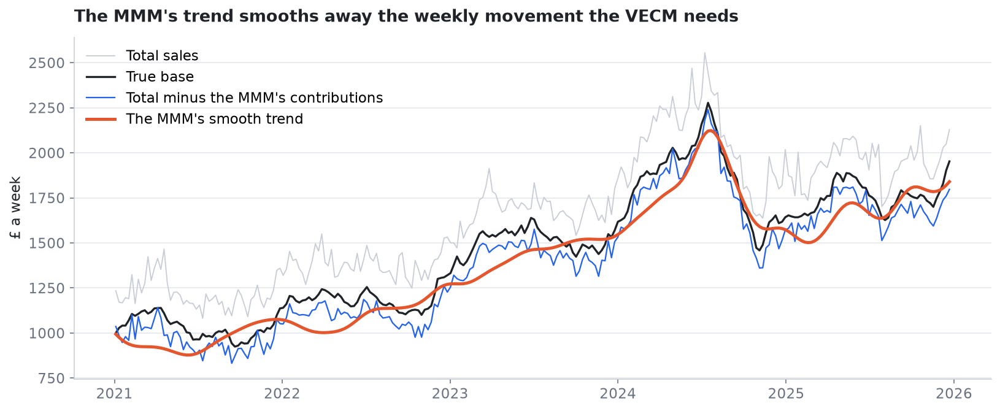
The good news is that the long-run return survived every route. It came within a few per cent of the truth even with the smooth trend.
The short run did not. Noise that the brand system does not explain stays in any base built from total sales, and it makes sales look quicker to adjust than they are. The smooth trend fails the other way: sales adjust far too slowly, and most fits found sales leading the brand metrics, a link that does not exist. So report the long-run return with confidence and treat adjustment speeds and half-lives as rough.
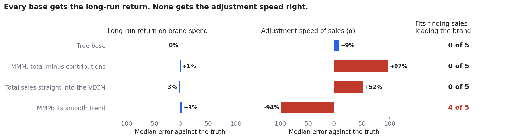
One more practical rule from the tests. Keep seasonality in the base and give the sales equation seasonal terms, but run the rank test on a deseasonalised copy.
§13 · Your data
Using it on your own data
Everything above runs on your own data with the same code. Three things matter more than any setting.
- Enough history. Weekly data for four years or more. With three years the rank test finds the right number of leads under half the time.
- Every brand activity. A channel left out lends its effect to the ones that move with it. On simulated monthly data, leaving out PR and sponsorship put brand spend 40% too high.
- How the numbers were made. How the tracker is built, when anything about it changed, and how budgets are set. A budget that follows sales breaks the drivers' independence.
The package ships with a notebook built for this. You edit one cell with your column names, costs per unit and options. It then works through every check in this article in order and records each one as fine, worth a look or needing your decision. It ends with a response curve and the return per £ for each channel.
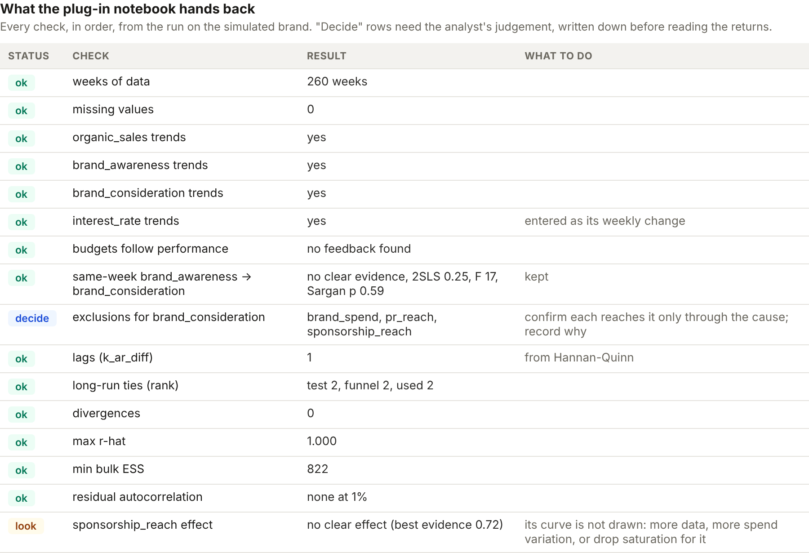
There is also an agent skill: written instructions an AI assistant can follow to run the analysis with an analyst who has never seen a VECM. It explains each step in plain words and stops at the decisions only the analyst can make.
Be clear about what the method cannot do.
- It shows what predicts what. Causal claims need the assumptions written down: drivers set outside the brand and exclusions that hold.
- The long run assumes a lift in awareness lasts. If your brand's awareness drifts back, the five-year figures are too high.
- Big budget moves rest on the curve's shape. Anything outside the spend your data has seen is an extrapolation.
- Base sales built from total sales blur the short run. Trust the long-run return more than any half-life.
§14 · Bringing it together
Bringing it together
Brand does last, and it can be measured. Tie the brand metrics and sales together as a system and a lasting lift in awareness carries through to sales. A short adstock lets it go, which is why an MMM undercounts brand.
In our simulated brand most of what a campaign earns arrives after the first year. The return on the next pound depends on how much is already being spent. Both answers come with intervals that hold up on short samples.
None of this is new thinking. Peter Cain set out the approach for marketing in a series of papers. This package is an open Bayesian version of it. Read his work first: it shows the method on real brand data. Our thanks to him.
The package, the plug-in notebook and the agent skill are at github.com/raz1470/bayesian_vecm. The documentation is at raz1470.github.io/bayesian_vecm.
References
- Binet, L. and Field, P. (2013). The Long and the Short of It. IPA.
- Cain, P. M. (2008). Limitations of conventional market-mix modelling. Admap, March 2008.
- Cain, P. M. (2010). Marketing mix modelling and return on investment. In P. J. Kitchen (ed.), Integrated Brand Marketing and Measuring Returns, ch. 4. Palgrave Macmillan.
- Cain, P. M. (2022). Modelling short- and long-term marketing effects in the consumer purchase journey. International Journal of Research in Marketing, 39(1), 96-116.
- Cain, P. M. (2025). Long-term advertising effects: The Adstock illusion. Applied Marketing Analytics, 11(1), 23-42.
- Engle, R. F. and Granger, C. W. J. (1987). Co-integration and error correction. Econometrica, 55(2), 251-276.
- Johansen, S. (1991). Estimation and hypothesis testing of cointegration vectors in Gaussian vector autoregressive models. Econometrica, 59(6), 1551-1580.
- Kim, H. (2009). Generalized impulse response analysis: General or extreme? Auburn University working paper.
- Pesaran, H. H. and Shin, Y. (1998). Generalized impulse response analysis in linear multivariate models. Economics Letters, 58(1), 17-29.